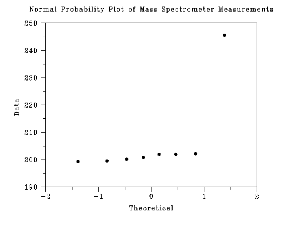

|
1.
Exploratory Data Analysis
1.3. EDA Techniques 1.3.5. Quantitative Techniques 1.3.5.17. Detection of Outliers
|
|||||||||||
|
Purpose: Detection of Outliers |
Grubbs' test
(Grubbs 1969 and
Stefansky 1972)
is used to detect a single outlier in a
univariate data set that follows an
approximately normal
distribution.
If you suspect more than one outlier may be present, it is recommended that you use either the Tietjen-Moore test or the generalized extreme studentized deviate test instead of the Grubbs' test. Grubbs' test is also known as the maximum normed residual test. |
||||||||||
| Definition |
Grubbs' test is defined for the hypothesis:
|
||||||||||
|
Grubbs' Test Example |
The Tietjen and Moore
paper gives the following set of 8 mass spectrometer measurements
on a uranium isotope:
 This plot indicates that the normality assumption is reasonable with the exception of the maximum value. We therefore compute Grubbs' test for the case that the maximum value, 245.57, is an outlier.
H0: there are no outliers in the data
Ha: the maximum value is an outlier
Test statistic: G = 2.4687
Significance level: α = 0.05
Critical value for an upper one-tailed test: 2.032
Critical region: Reject H0 if G > 2.032
For this data set, we reject the null hypothesis and conclude
that the maximum value is in fact an outlier at the 0.05 significance level.
|
||||||||||
| Questions |
Grubbs' test can be used to answer the following questions:
|
||||||||||
| Importance |
Many statistical techniques are sensitive to the presence
of outliers. For example, simple calculations of the mean
and standard deviation may be distorted by a single grossly
inaccurate data point.
Checking for outliers should be a routine part of any data analysis. Potential outliers should be examined to see if they are possibly erroneous. If the data point is in error, it should be corrected if possible and deleted if it is not possible. If there is no reason to believe that the outlying point is in error, it should not be deleted without careful consideration. However, the use of more robust techniques may be warranted. Robust techniques will often downweight the effect of outlying points without deleting them. |
||||||||||
| Related Techniques | Several graphical techniques can, and should, be used to help detect outliers. A simple normal probability plot, run sequence plot, a box plot, or a histogram should show any obviously outlying points. In addition to showing potential outliers, several of these graphics also help assess whether the data follow an approximately normal distribution. | ||||||||||
| Case Study | Heat flow meter data. | ||||||||||
| Software | Some general purpose statistical software programs support the Grubbs' test. Both Dataplot code and R code can be used to generate the analyses in this section. | ||||||||||